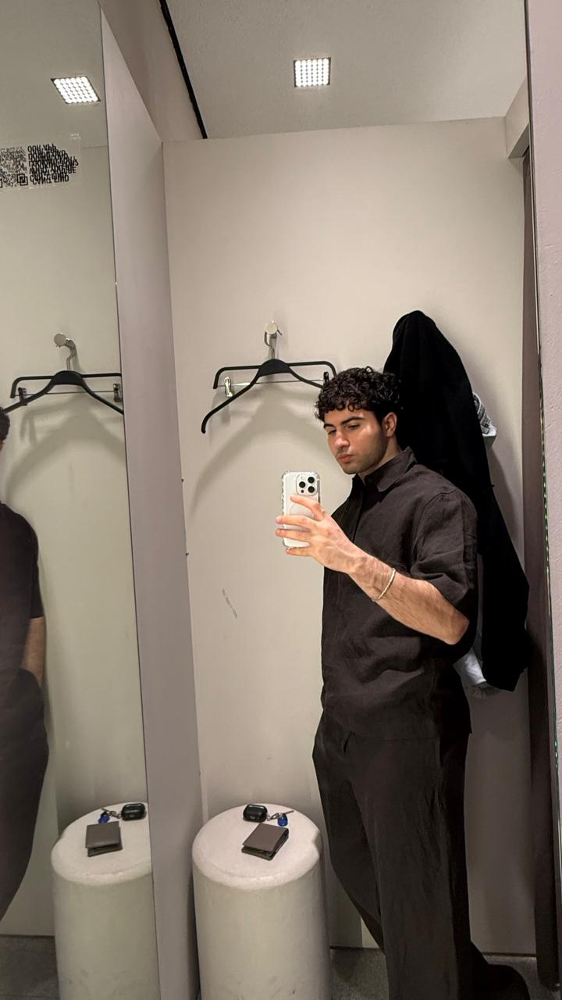
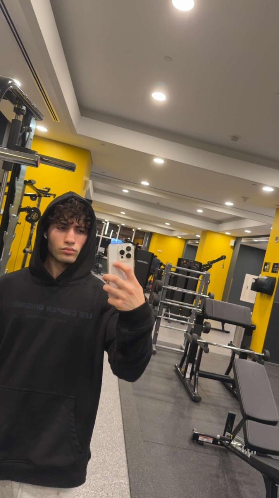
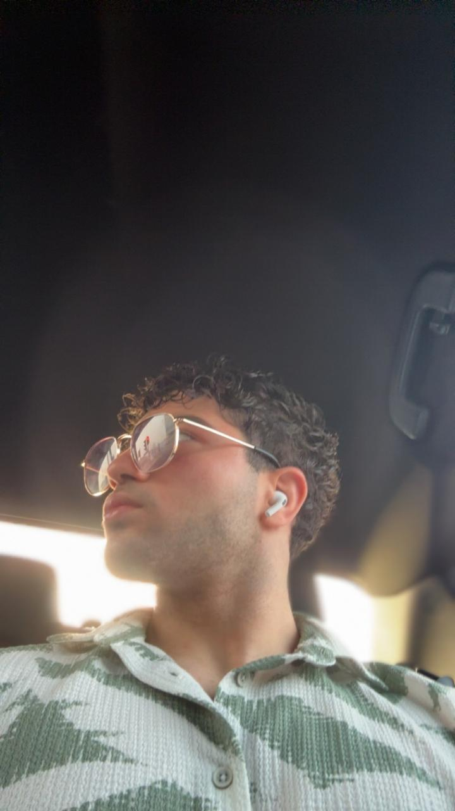

Focused on university, training, and building a strong routine.
Canada + Jordan / Khalifa University
Iham
A 19-year-old AI and Robotics student building his life around intelligent machines, volleyball, gym discipline, and calisthenics.
Studying the systems that connect code, machines, and autonomy.
Fast reactions, court awareness, and competitive team energy.
Currently centered on self-growth, sport, and long-term goals.
Profile

Student life with a training mindset.
Iham is a Canadian-Jordanian student at Khalifa University. His day-to-day rhythm blends lectures, technical ambition, strength training, calisthenics, and time on the volleyball court.
University
Khalifa University
Degree path
AI and Robotics
Roots
Canada and Jordan
Study
AI and Robotics at Khalifa University.
His academic lane points toward the future: artificial intelligence, autonomous systems, robotics, and the engineering discipline needed to make smart machines useful in the real world.
Campus focus
Learning, projects, labs
Technical direction
Autonomy, control, intelligence
Personal edge
Consistency under pressure
Training
Gym strength, calisthenics control, volleyball speed.
Training is part of the identity: gym sessions for strength, calisthenics for body control, and volleyball for timing, agility, and competitive rhythm.

Roots
Canadian-Jordanian background, UAE campus life.
His story sits across cultures: Canada and Jordan shaping where he comes from, Khalifa University shaping where he is going, and sport keeping the routine sharp.
Gallery
Moments from Iham's life.
Campus style, training days, gym discipline, and off-duty moments.
